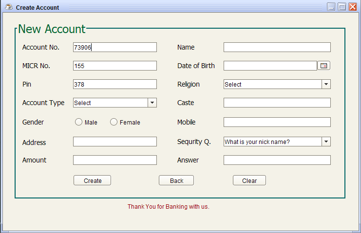

Bank Managemenet System Using Netbeans and Java
Introduction
I have made a Bank Management System which is based on GUI. It is an application for maintaining a persons account in a bank. This system provides the access to the customer to create an account, deposit/withdraw/transfer the cash from his account, also to view reports of all accounts present.
Objective of bank management project in java
The main objective of creating a GUI-based bank management system is to maintain the bank account records, transaction records of the customers. Easy to track all the banking activity of a centralized system. This Project contains all the basic activities of the bank. there is 2 main actor.
Admin: Following activity performs by admin or bank user.
When a new user will be added under any bank. A unique account number will generate automatically for the customer that the user will use this during the transactions.
User: User can perform following crud operation.
Now the question arrieses "WHY I HAVE MADE THIS"
Bank is the place where customers feel the sense of safety for their property. In the bank, customers deposit and withdraw their money. Transaction of money also is a part where customer takes shelter of the bank. Now to keep the belief and trust of customers, there is the positive need for management of the bank, which can handle all this with comfort and ease. Smooth and efficient management affects the satisfaction of the customers and staff members, indirectly. And of course, it encourages management committee in taking some needed decision for future enhancement of the bank. Now a days, managing a bank is tedious job upto certain limit. So software that reduces the work is essential. Also today’s world is a genuine computer world and is getting faster and faster day-by-day. Thus, considering above necessities, the software for bank management has became necessary which would be useful in managing the bank more efficiently.
. Our software will perform and fulfill all the tasks that any customer would desire. . Our motto is to develop a software program for managing the entire bank process related to customer accounts, employee accounts and to keep each every track about their property and their various transaction processes efficiently. . Hereby, our main objective is the customer’s satisfaction considering today’s faster world. In the recent years, computers are included in almost all kind of works and jobs everyone come across in the routine. The availability of the software’s for almost every process or every system has taken the world in its top-gear and fastens the day-to-day life. So, we have tried our best to develop the software program for the Bank Management System where all the tasks to manage the bank system are performed easily and efficiently. It manages all the transactions like new account entry, deposit as well as withdraw entry, transaction of money for various processes, loan entry, managing bills cash or cheque, etc. Thus, above features of this software will save transaction time and therefore increase the efficiency of the system.
Let's start coding…
For your better understanding, I have divided the code into the following functions.
Also, to create a GUI, I will be using Swing. Swing is a library or a set of program components used to create graphical user interface components such as scroll bars, buttons, dialog boxes, etc.
Now in this article on Library Management System in Java, let us understand the code of all the above functions.Login
I have created a Login Function to enable the user and the admin login. So, initially when a Admin/User logs in, they have to insert the customer Account No and the pin if they wants to login in to the old account. If they wants to open a new account then they have to click upon the New Account Button shown in the interface.
Loading
if they log in the old account, after clicking on the login button, Loading will start for the next Interface.New Account
If they click on the New Account, then this interface will arise and the User have to fill all the detail of the new account holder or the new customer. After filling each and every entry, they have to click on the create button and the new account will be created. Account No and Pin will be generated by the machine itself. The user also have the facility to go back and to clear the filled details. User Menus
I have created a set of menus, which gives some contribution to a different-different fuctions. They are Deposit, Withdrawl, Profile, Transaction, Transfer, View Balance, Customer List, Change Pin.